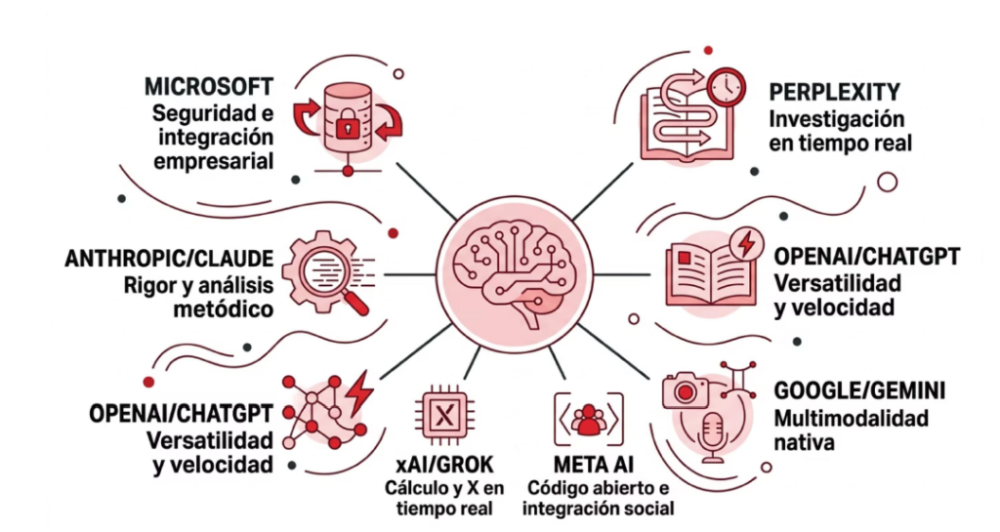

VISUALIZACIÓN ESTRATÉGICA
Mapa del Ecosistema IA
Recurso en LocalUn resumen visual de los grandes jugadores y sus propuestas de valor.

💡 Cómo leer este mapa
Este gráfico conecta los diferentes perfiles que hemos estudiado: desde la seguridad empresarial de Microsoft hasta la multimodalidad de Google, pasando por el rigor de Anthropic y la investigación de Perplexity. Haz clic sobre la imagen para ampliarla.